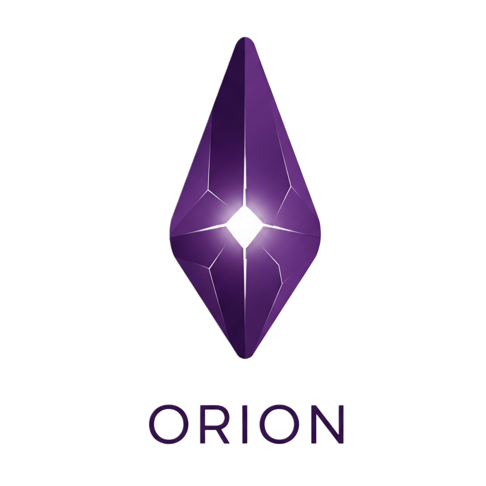

Project Mandate
7 Piracy is an Orion project focused on tracking and showing how digital content moves around. The goal is simple: keep it clean, fast, and useful.
The platform is built to load quick and work on any device, without extra noise.

About Orion
Orion is a small collective that studies how information flows online. No big names, no spotlight — just work that speaks for itself. The real admin stays hidden for security reasons.